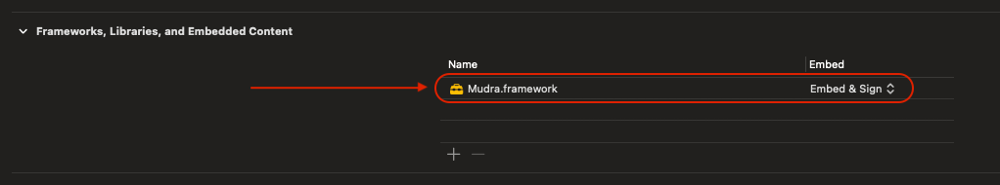
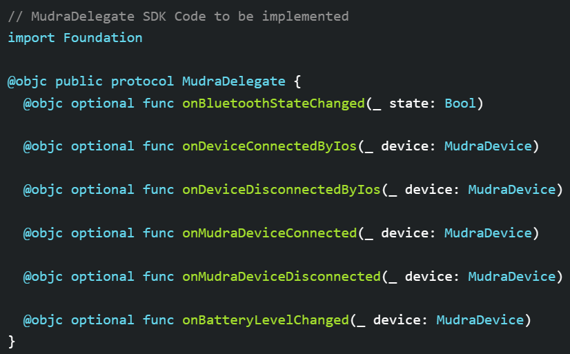
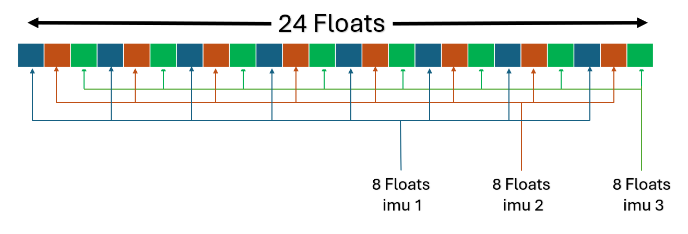
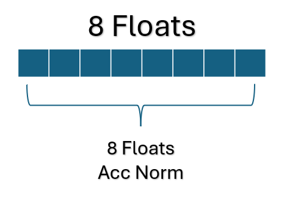

Welcome
Welcome to Mudra SDK. This document enables creating your own unique experiences based on the Mudra Band™ and Mudra API. Here we will explain how to use the band as well as interface with your device. Our API includes language bindings for Swift (iOS), Java (Android) and C# (Unity Plugin). You can find links to a sample application for each of iOS, Android or Unity under the Sample Applications section.
Device Modes
| Mode | Description | LED Indication |
|---|---|---|
| Advertising | Flashing orange for one minute |  |
| Connected | Flashing green for 1 second | |
| Low Battery | Flashing red |  |
| Charging | In case of a full charged battery constant blue, otherwise flashing blue |  |
| Firmware update | Constant purple |  |
Access the API
iOS
Download Mudra.framework from the following link : framework
Add to your project in Xcode group/folder named "frameworks".
Add Mudra.framework to this group/folder "frameworks" and sign 'Copy if needed' when adding the framework.

- Go to your project -> General tab -> Frameworks, Libraries, And Embedded Content -> Set the value of Mudra.framework to "Embed & Sign"

- Go to your project -> Info tab -> Add a new row titled "Called when the bluetooth state is changed.Privacy - Bluetooth Always Usage Description." In the value field, provide the reason for requiring BLE. For example, you could write: "This allows the app to find and connect to your iPhone."

Android
// gradle.properties file:
authToken=<Your Jitpack Token>
// settings.gradle file:
dependencyResolutionManagement {
repositoriesMode.set(RepositoriesMode.FAIL_ON_PROJECT_REPOS)
repositories {
google()
mavenCentral()
maven { url 'https://jitpack.io'
credentials { username authToken }}
}
}
// build.gradle file:
dependencies {
.
.
.
implementation 'com.github.wearable-devices:Dev_MudraAndroidSDK:1.5.11.5'
}
// manifest file:
<uses-permission android:name="android.permission.BLUETOOTH" />
<uses-permission android:name="android.permission.BLUETOOTH_ADMIN" />
<uses-permission android:name="android.permission.ACCESS_FINE_LOCATION" />
<uses-permission android:name="android.permission.ACCESS_COARSE_LOCATION" />
- To access the API you must first generate an access token.
- Navigate to https://jitpack.io/, Sign in using your GitHub account.
- Click on your Git-hub username, on top right of the page.
- Copy the access token shown on the first line and add it to your project gradle.properties file:
- Add the repository to your project settings.gradle file:
- Add BLE permission to your project manifest.xml file:
- Implement the SDK to your project gradle.build file inside the dependencies:
Unity
- Go to Mudra/Mudra Setup in the toolbar
- The Mudra Plugin depends on the new Unity input system. Clicking 'Install' will install the new input system.
- The MudraUnity Plugin currently does not support standalone builds. Please select either iOS or Android as your build target. You can use the dedicated buttons in the Mudra Setup window for this purpose.

- If the chosen build target is Android, press the 'Fix' buttons to modify the relevant build settings.
- Now, press 'EnableMudra' to activate all the MudraPlugin scripts.
Licenses
To utilize certain features of the SDK, a license is required.
- Sign up a new user for the MudraBand application on iOS.
- Contact Tom at tom.y@wearabledevices.co.il to obtain licenses for using features in the SDK.
| License | Features |
|---|---|
| Main | Pressure, Gesture recognition, Air Mouse, ACC NORM |
| RawData | SNC, IMU GYRO, IMU ACC |
Initialization and Connection
iOS
//ContentViewModel that implements the MudraDelegate
import Mudra
import Foundation
class ContentViewModel : ObservableObject {
static let shared = ContentViewModel()
@Published var contentModel : ContentModel = ContentModel()
}
extension ContentViewModel: MudraDelegate {
func onBluetoothStateChanged(_ state: Bool) {
DispatchQueue.main.async {
//Update the UI Here!
}
}
func onDeviceConnectedByIos(_ device: MudraDevice) {
//Event : when mudra device connects to the iPhone operating system "iOS"
DispatchQueue.main.async {
//Update the UI Here!
}
}
func onDeviceDisconnectedByIos(_ device: MudraDevice) {
//Event : when mudra device disconnects from the iPhone operating system "iOS"
DispatchQueue.main.async {
//Update the UI Here!
}
}
func onMudraDeviceConnected(_ device: MudraDevice) {
//Event : when mudra device connects to the app
DispatchQueue.main.async {
//Update the UI Here!
}
}
func onMudraDeviceDisconnected(_ device: MudraDevice) {
//Event : when mudra device disconnects from the app
DispatchQueue.main.async {
//Update the UI Here!
}
}
func onBatteryLevelChanged(_ device: MudraDevice) {
//Event : when battery level changed for connected device
DispatchQueue.main.async {
//Update the UI Here!
}
}
}
//--------------------------------------------------------------------------------------------------------------------
// AppDelegate
import Mudra
import UIKit
class AppDelegate: UIResponder, UIApplicationDelegate, ObservableObject {
func application(_ application: UIApplication, didFinishLaunchingWithOptions launchOptions: [UIApplication.LaunchOptionsKey: Any]?) -> Bool {
print("application launched")
self.setMudraDelegate() //<--
self.setLicense() //<--
self.initBluetouth() //<--
return true
}
func setMudraDelegate() {
Mudra.shared.delegate = ContentViewModel.shared //<-- "ContentViewModel which implements the MudraDelegate"
}
func setLicense() {
// Set your licenses (sent by Wearable Devices for expanded features)
Mudra.getLicenseForEmailFromCloud(email: "-----@------") { success , errorResult in
if success {
print("licenses set successfully.")
} else {
print("failed to set licenses : \(errorResult)")
}
}
}
func initBluetouth() {
print("initBlueTouth")
Mudra.shared.initBluetouth()
}
}
- The iOS SDK supports development in both Objective-C and Swift through the implementation of the MudraDelegate Protocol. Note that the API supports multiple devices; when the 'device' parameter is received in the following functions, it refers to this specific device.
- 
| Event | Description |
|---|---|
| func onBluetoothStateChanged(_ state: Bool) | Called when the bluetooth state is changed. When the bluetooth is turened on/off the state becomes true/false. |
| func onDeviceConnectedByIos(_ device: MudraDevice) | Called for each device which appeared as connected on the iOS BLE settings. This callback is called right after the bluetooth is finished Initializing (2). |
| func onDeviceDisconnectedByIos(_ device: MudraDevice) | Called when a device is disconnected by the iOS. |
| func onMudraDeviceConnected(_ device: MudraDevice) | Called when a device is connected to the application. |
| func onMudraDeviceDisconnected(_ device: MudraDevice) | Called when a device is disconnected by the application. |
| func onBatteryLevelChanged(_ device: MudraDevice) | Called when the battery level is changed. |
Start by initializing bluetooth environment and setting up the system :
- Mudra.shared.delegate = ContentViewModel.shared
- Mudra.getLicenseForEmailFromCloud(email: "-----@------") { success , errorResult in }
- Mudra.shared.initBluetouth()
In order to connect or disconnect a device to the application :
| Description | Function |
|---|---|
| To connect a device call the connect function | device.connect() |
| To disconnect a device call the disconnect function | device.disconnect() |
Android
- The Android SDK supports development with Java through the implementation of the MudraDelegate Interface. Note that the API supports multiple devices; when the 'device' parameter is received in the following functions, it refers to this specific device.
public class MainActivity extends AppCompatActivity {
private ActivityMainBinding binding;
@Override
protected void onCreate(Bundle savedInstanceState) {
super.onCreate(savedInstanceState);
binding = ActivityMainBinding.inflate(getLayoutInflater());
setContentView(binding.getRoot());
initializeMudra();
}
private void initializeMudra()
{
Mudra.getInstance().requestAccessPermissions(this);
Mudra.getInstance().getLicenseForEmailFromCloud("-----@------", (success, errorResult) -> {
if( success ) {
Log.d(TAG , "licenses set successfully.");
} else {
Log.d(TAG , "failed to set licenses : " + errorResult +".");
}
});
}
@Override
public boolean onCreateOptionsMenu(Menu menu) {
// Inflate the menu; this adds items to the action bar if it is present.
getMenuInflater().inflate(R.menu.menu_main, menu);
return true;
}
}
| Event | Description |
|---|---|
| public void onDeviceDiscovered(MudraDevice mudraDevice) | Called when a device is discoverd by the application. |
| public void onDeviceConnected(MudraDevice mudraDevice) | Called when a device is connected to the application. |
| public void onDeviceDisconnected(MudraDevice mudraDevice) | Called when a device is disconnected by the application. |
Start by initializing Mudra environment and setting up the system inside the MainActivity:
- Mudra.getInstance().requestAccessPermissions(this);
- Mudra.getInstance().getLicenseForEmailFromCloud("-------@--------", (success, errorResult) -> { });
In order to connect, disconnect, scan, stop scanning and get paired devices for a device to the application :
| Description | Function |
|---|---|
| To connect a device call the connect function | mudraDevice.connect(Context context) |
| To disconnect a device call the disconnect function | mudraDevice.disconnect() |
| To scan for a Mudra device | Mudra.getInstance().scan(Context context); |
| To stop scaning for a Mudra device | Mudra.getInstance().stopScan(); |
| To get the paried Mudra devices to the OS | Mudra.getInstance().getBondedDevices(Context context); |
//--------------------------------------------------------------------------------------------------------------------
private void setMudraDelegate() {
Mudra.getInstance().setMudraDelegate(new MudraDelegate() {
@Override
public void onDeviceDiscovered(MudraDevice mudraDevice) {
}
@Override
public void onDeviceConnected(MudraDevice mudraDevice) {
}
@Override
public void onDeviceDisconnected(MudraDevice mudraDevice) {
}
});
}
- To listen to MudraDelegate callbacks you need to set the MudraDelegate by : Mudra.getInstance().setMudraDelegate(MudraDelegate mudraDelegate);
Unity
A MudraManager is required in the scene. To create one, go to Mudra/MudraManager in the toolbar.
When the SDK connects to the device, it will create a new device in the Unity input system. To receive input values, you need to set up both an input action asset and a script to listen to the messages. The plugin package includes both by default.
These are all the input bindings for the MudraDevice. You can find them under 'Other/MudraDevice' when setting up a new action.
You will also need to add a PlayerInput Component to ensure the inputs function properly.
Here is an example of a fully functional MudraManager and Inputs setup.

- The MudraManager serves as your connection to the SDK and it performs several important functions.
| Function | Description |
|---|---|
| public void SetAirmouseState(bool state) | Sets airmouse on/off. |
| public void SetScale(int scale) | Sets the pressure scale. |
| public void SetPressureSensitivity(int sens) | Sets the pressure sensitivity. |
| public void SetAirMouseSpeed(int speed) | Set the airmouse speed. |
| public void SetHand(int hand) | Set the main hand of the user. |
API
MudraDevice properties
mudraDevice.battery // Int, Indicating the device's battery level.
mudraDevice.firmwareVersion // Optinal String, Indicating the device's firmware version, or **nil** in case there is no firmware version.
mudraDevice.serialNumber // Optinal Int, Indicating the device's serial number, or **nil** in case there is no serial number.
mudraDevice.bandNumber // Optinal String, Indicating the device's bandNumber, or **nil** in case there is no band number.
mudraDevice.getBatteryLevel() // int, Returns the device's battery level.
mudraDevice.getFirmwareVersion() // String, Returns the device's firmware version, returns **empty string** in case there is no firmware version.
mudraDevice.getSerialNumber() // long, Returns the device's the device's serial number, or **0** in case there is no serial number.
mudraDevice.getDeviceNumberByName() // String, Returns the device's band number, or **0** in case there is no band number.
After getting the MudraDevice it is possible to ask the device for more information using the following properties:
Snc
//To enable register, for the callback.
mudraDevice.setOnSncPackageReady{ (timestamp,data) in
// data's length is 24
// [0-7) is SNC_1
// [8-15) is SNC_2
// [15-23) is SNC_3
}
//To disable put nil.
mudraDevice.setOnSncPackageReady(nil)
//To check if the callback is set.
mudraDevice.onSncBlock != nil // returns true in case the callback is set, false otherwise.
//To enable register, for the callback.
mudraDevice.setOnSncReady(new OnSncReady() {
@Override
public void run(long timestamp, float[] data) {
// data's length is 24
// [0-7) is SNC_1
// [8-15) is SNC_2
// [15-23) is SNC_3
}
});
//To disable put null.
mudraDevice.setOnSncReady(null)
//To check if the callback is set.
mudraDevice.isOnSncCallbackSet(); // returns true in case the callback is set, false otherwise.
- Requirements :
- RawData License - Get license
Functionality for exposing raw SNC (Surface Nerve Conductance) sensor values. This function may incur an additional fee (We will send a license with instructions for those who are interested in this functionality).
Gyro
//To enable register, for the callback.
mudraDevice.setImuGyroReady{ (timestamp,data) in
// data's length is 24
// [0, 3, 6, 9 , 12, 15, 18, 21] is GYRO_1
// [1, 4, 7, 10, 13, 16, 19, 22] is GYRO_2
// [2, 5, 8, 11, 14, 17, 20, 23] is GYRO_3
}
//To disable put nil.
mudraDevice.setImuGyroReady(nil)
//To check if the callback is set.
mudraDevice.onImuGyroBlock != nil // returns true in case the callback is set, false otherwise.
//To enable register, for the callback.
mudraDevice.setOnImuGyroReady(new OnImuGyroReady() {
@Override
public void run(long timestamp, float[] data) {
// data's length is 24
// [0, 3, 6, 9 , 12, 15, 18, 21] is GYRO_1
// [1, 4, 7, 10, 13, 16, 19, 22] is GYRO_2
// [2, 5, 8, 11, 14, 17, 20, 23] is GYRO_3
}
});
//To disable put null.
mudraDevice.setOnImuGyroReady(null)
//To check if the callback is set.
mudraDevice.isOnImuGyroCallbackSet(); // returns true in case the callback is set, false otherwise.
- Requirements :
- RawData License - Get license
 Functionality for exposing raw GYRO (Gyroscope) sensor values. This function may incur an additional fee (We will send a license with instructions for those who are interested in this functionality).
Acc
//To enable register, for the callback.
mudraDevice.setImuAccRawReady{ (timestamp,data) in
// data's length is 24
// [0, 3, 6, 9 , 12, 15, 18, 21] is ACC_1
// [1, 4, 7, 10, 13, 16, 19, 22] is ACC_2
// [2, 5, 8, 11, 14, 17, 20, 23] is ACC_3
}
//To disable put nil.
mudraDevice.setImuAccRawReady(nil)
//To check if the callback is set.
mudraDevice.onImuAccRawBlock != nil // returns true in case the callback is set, false otherwise.
//To enable register, for the callback.
mudraDevice.setOnImuAccRawReady(new OnImuGyroReady() {
@Override
public void run(long timestamp, float[] data) {
// data's length is 24
// [0, 3, 6, 9 , 12, 15, 18, 21] is ACC_1
// [1, 4, 7, 10, 13, 16, 19, 22] is ACC_2
// [2, 5, 8, 11, 14, 17, 20, 23] is ACC_3
}
});
//To disable put null.
mudraDevice.setOnImuAccRawReady(null)
//To check if the callback is set.
mudraDevice.isOnImuAccRawCallbackSet(); // returns true in case the callback is set, false otherwise.
- Requirements :
- RawData License - Get license
Functionality for exposing raw ACC (Accelerometer Characterization Capability) sensor values. This function may incur an additional fee (We will send a license with instructions for those who are interested in this functionality).
Acc Norm
//To enable register, for the callback.
mudraDevice.setOnImuAccNormPackageReady{ (timestamp,data) in
}
//To disable put nil.
mudraDevice.setOnImuAccNormPackageReady(nil)
//To check if the callback is set.
mudraDevice.onImuAccNormBlock != nil // returns true in case the callback is set, false otherwise.
//To enable register, for the callback.
mudraDevice.setOnImuAccNormReady(new OnImuAccNormReady() {
@Override
public void run(long timestamp, float[] floats) {
}
});
//To disable put null.
mudraDevice.setOnImuAccNormReady(null)
//To check if the callback is set.
mudraDevice.isOnImuAccNormCallbackSet(); // returns true in case the callback is set, false otherwise.
- Requirements :
- Main License - Get license

Functionality for revealing raw ACC NORM (Accelerometer Normalization) sensor values. This function might entail an extra charge (We will dispatch a license with guidelines for those interested in this feature).
Pressure
//To enable register, for the callback.
mudraDevice.setOnProportionalReady{ (pressure) in
}
//To disable put nil.
mudraDevice.setOnProportionalReady(nil)
//To check if the callback is set.
mudraDevice.onProportionalBlock != nil // returns true in case the callback is set, false otherwise.
//To enable register, for the callback.
mudraDevice.setOnPressureReady(new OnPressureReady() {
@Override
public void run(float pressure) {
}
});
//To disable put null.
mudraDevice.setOnPressureReady(null)
//To check if the callback is set.
mudraDevice.isOnPressureReadySet(); // returns true in case the callback is set, false otherwise.
- Requirements :
- Main License - Get license
- AirMouse Algorithm - Set algorithm
In order to esstimate the amount of finger tip pressure, use the descriped API. The returned pressure parameter indecates 1.0 for the most amount of pressure while 0.0 indecates the lowest.
Gesture Recognition
mudraDevice.setOnGestureReady{ (gesture) in
}
//To disable put nil.
mudraDevice.setOnGestureReady(nil)
//To check if the callback is set.
mudraDevice.onGestureReadyBlock != nil // returns true in case the callback is set, false otherwise.
//To enable register, for the callback.
mudraDevice.setOnGestureReady(new OnGestureReady() {
@Override
public void run(GestureType gestureType) {
}
});
//To disable put null.
mudraDevice.setOnGestureReady(null)
//To check if the callback is set.
mudraDevice.isOnGestureCallbackSet(); // returns true in case the callback is set, false otherwise.
- Requirements :
- Main License - Get license
- AirMouse Algorithm - Set algorithm
After connecting to a device it is possible to register to all kinds of callbacks like listening to gestures and pressure. This section is focused on listening to gestures. It is possible to listen to all kinds of gestures like : thumb, index, tap, twist, double index, double middle tap and by etc.
Air-Mouse
mudraDevice.setAirMouseActive(active: true) //Enable
mudraDevice.setAirMouseActive(active: false) //Disable
mudraDevice.setAirMouseActive(true) //Enable
mudraDevice.setAirMouseActive(false) //Disable
- Requirements :
- Main License - Get license
Enable or disable the air mouse.
When the airmouse is enabled, the device start to simulate mouse actions like clicks or movements. The device then sends the clicks and movement to any operating system using the HID (Human Interface Device) protocol.
Algorithms
//To change the algorithm model
mudraDevice.algorithemMode = .AirMouseMode
mudraDevice.algorithemMode = .NeuralClicker
//To change the algorithm model
mudraDevice.setModel(ModelType.AirMouse);
mudraDevice.setModel(ModelType.NeuralClicker);
It is possible to change the AI algorithem that runs "Under the hood".
| Algorithm | Requires |
|---|---|
| AirMouse | SNC / ACC NORM |
| NeuralClicker | SNC / GYRO / ACC |
Sample Applications
- Android Sample Application gitHub : AndroidAppExample
- iOS Sample Application gitHub : iOSAppExample
Troubleshooting
| Problem | OS | Solution |
|---|---|---|
| Mudra does not connect to host device | Android | Check your Bluetooth version, we recommend 4.2 and above. |
| Mudra does not connect to host device | All | Check if your device's LED flashes red, if so recharge (LED will flash blue) |
| Mudra gestures are not correctly recognize | All | Please try again our on-boarding app. Try to follow the instruction and perform another calibration. |
| Mudra pressure values fluctuate | All | Please make sure your device is in contact with your skin (no need to be tight) |
| Missing dll error | Unity | Make sure installation created an environment variable path and unpacked the dlls inside. If not, try running Setup.msi as administrator |
Please contact support@wearabledevices.co.il for any additional questions or suggestions.